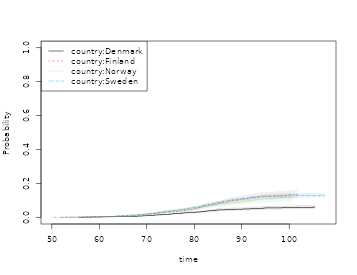
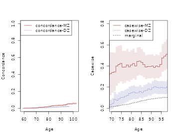
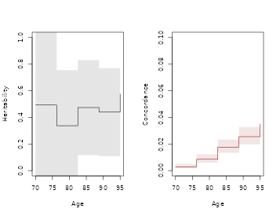
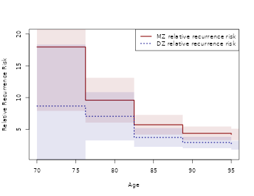

A practical guide to Human Genetics with Lifetime Data
Klaus Holst & Thomas Scheike
2026-01-11
Source:vignettes/time-to-event-family-studies-arev.Rmd
time-to-event-family-studies-arev.RmdThis vignette demonstrates how to analyze familial resemblance for twins using the {}-package and is accompanying the review by Scheike and Holst (2020).
We consider a data-set in that resembles the data of that were based on the NorTwinCan a collaborative research project studying the genetic and environmental components of prostate cancer. The data comprises around 18,000 DZ twins and 11,000 MZ twins. It was a population based register study based on the Danish, Finnish, Norwegian, and Swedish twin registries.
We first illustrate a hazards based analysis to show how one would study dependence in survival data. This needs to be done under assumptions about independent competing risks when the outcome of interest is observed subject to competing risks (here death).
This seems reasonable here since the occurrence of cancer prior to death only contains weak association with the risk of death for the other twin, and vice-versa.
First looking at the data
library(mets)
set.seed(122)
data(prt)
dtable(prt,~status+cancer)
#>
#> cancer 0 1
#> status
#> 0 21283 0
#> 1 6997 0
#> 2 0 942
dtable(prt,~zyg+country,level=1)
#>
#> zyg
#> DZ MZ
#> 17991 11231
#>
#> country
#> Denmark Finland Norway Sweden
#> 9671 3926 4107 11518we see that there are 21283 censorings and 6997 deaths (prior to cancer) and a total of 942 prostate cancers. Approximately half the data consist of DZ twins. In addition we see that there are around 10000 twins from Denmark and Sweden, and only 4000 from Norway and Finland, respectively.
Survival
Under assumption of random effects acting independently on different cause specific hazards we can analyse competing risks data considering the cause-specific hazard. Typically, this can be questionable and the cumulative incidence modelling below does not rely on this assumption.
We consider the cause specific hazard of cancer in the competing risks model with death and cancer.
First estimating the marginal hazards for each country.
# Marginal Cox model here stratified on country without covariates
margph <- phreg(Surv(time,cancer)~strata(country)+cluster(id),data=prt)
plot(margph)
We see that the marginal of Denmark in particular is quite different.
Then we fit a two-stage random effects models with country specific marginals and random-effects variances that differ for MZ and DZ twins.
# Clayton-Oakes, MLE , overall variance
fitco1<-twostageMLE(margph,data=prt,theta=2.7)
summary(fitco1)
#> Dependence parameter for Clayton-Oakes model
#> Variance of Gamma distributed random effects
#> $estimates
#> Coef. SE z P-val Kendall tau SE
#> dependence1 2.782962 0.4225572 6.586001 4.518319e-11 0.5818491 0.0369421
#>
#> $type
#> NULL
#>
#> attr(,"class")
#> [1] "summary.mets.twostage"
fitco2 <- survival.twostage(margph,data=prt,theta=2.7,clusters=prt$id,var.link=0)
summary(fitco2)
#> Dependence parameter for Clayton-Oakes model
#> Variance of Gamma distributed random effects
#> $estimates
#> Coef. SE z P-val Kendall tau SE
#> dependence1 2.782962 0.4225529 6.586069 4.516254e-11 0.5818491 0.03694172
#>
#> $type
#> [1] "clayton.oakes"
#>
#> attr(,"class")
#> [1] "summary.mets.twostage"With different random effects for MZ and DZ
mm <- model.matrix(~-1+factor(zyg),prt)
fitco3<-twostageMLE(margph,data=prt,theta=1,theta.des=mm)
summary(fitco3)
#> Dependence parameter for Clayton-Oakes model
#> Variance of Gamma distributed random effects
#> $estimates
#> Coef. SE z P-val Kendall tau SE
#> factor(zyg)DZ 1.318966 0.3861577 3.415614 6.363831e-04 0.3974027 0.07011148
#> factor(zyg)MZ 5.421921 0.9626267 5.632423 1.776956e-08 0.7305280 0.03495065
#>
#> $type
#> NULL
#>
#> attr(,"class")
#> [1] "summary.mets.twostage"
fitco4 <- survival.twostage(margph,data=prt,theta=1,clusters=prt$id,var.link=0,theta.des=mm)
summary(fitco4)
#> Dependence parameter for Clayton-Oakes model
#> Variance of Gamma distributed random effects
#> $estimates
#> Coef. SE z P-val Kendall tau SE
#> factor(zyg)DZ 1.318966 0.3861745 3.415466 6.367306e-04 0.3974027 0.07011454
#> factor(zyg)MZ 5.421920 0.9625027 5.633148 1.769493e-08 0.7305280 0.03494615
#>
#> $type
#> [1] "clayton.oakes"
#>
#> attr(,"class")
#> [1] "summary.mets.twostage"
round(estimate(coef=fitco4$coef,vcov=fitco4$var.theta)$coefmat[,c(1,3:4)],2)
#> Estimate 2.5% 97.5%
#> factor(zyg)DZ 1.32 0.56 2.08
#> factor(zyg)MZ 5.42 3.54 7.31
## mz kendalls tau
kendall.ClaytonOakes.twin.ace(fitco4$theta[2],0,K=1000)$mz.kendall
#> [1] 0.7380818
## dz kendalls tau
kendall.ClaytonOakes.twin.ace(fitco4$theta[1],0,K=1000)$mz.kendall
#> [1] 0.4154807The dependence of MZ twins is much stronger, and is summarized by a variance at in contrast to the variance at .
Now we look at the polygenic modelling for survival data, here applied to the cause specific hazards.
### setting up design for random effects and parameters of random effects
desace <- twin.polygen.design(prt,type="ace")
### ace model
fitace <- survival.twostage(margph,data=prt,theta=1,
clusters=prt$id,var.link=0,model="clayton.oakes",
numDeriv=1,random.design=desace$des.rv,theta.des=desace$pardes)
summary(fitace)
#> Dependence parameter for Clayton-Oakes model
#> Variance of Gamma distributed random effects
#> $estimates
#> Coef. SE z P-val Kendall tau SE
#> dependence1 7.223855 1.841525 3.922757 8.754161e-05 0.7831709 0.04328951
#> dependence2 -1.582396 1.088423 -1.453843 1.459898e-01 -3.7892257 12.48240540
#>
#> $type
#> [1] "clayton.oakes"
#>
#> $h
#> Estimate Std.Err 2.5% 97.5% P-value
#> [1,] 1.2805 0.1698 0.9477 1.61324 4.615e-14
#> [2,] -0.2805 0.1698 -0.6132 0.05226 9.850e-02
#>
#> $vare
#> NULL
#>
#> $vartot
#> Estimate Std.Err 2.5% 97.5% P-value
#> p1 5.641 0.9894 3.702 7.581 1.184e-08
#>
#> attr(,"class")
#> [1] "summary.mets.twostage"
### ace model with positive random effects variances
# fitacee <- survival.twostage(margph,data=prt,theta=1,
# clusters=prt$id,var.link=1,model="clayton.oakes",
# numDeriv=1,random.design=desace$des.rv,theta.des=desace$pardes)
#summary(fitacee)
### ae model
#desae <- twin.polygen.design(prt,type="ae")
#fitae <- survival.twostage(margph,data=prt,theta=1,
# clusters=prt$id,var.link=0,model="clayton.oakes",
# numDeriv=1,random.design=desae$des.rv,theta.des=desae$pardes)
#summary(fitae)
### de model
desde <- twin.polygen.design(prt,type="de")
fitde <- survival.twostage(margph,data=prt,theta=1,clusters=prt$id,var.link=0,model="clayton.oakes",
numDeriv=1,random.design=desde$des.rv,theta.des=desde$pardes)
summary(fitde)
#> Dependence parameter for Clayton-Oakes model
#> Variance of Gamma distributed random effects
#> $estimates
#> Coef. SE z P-val Kendall tau SE
#> dependence1 5.940643 0.9837336 6.038873 1.551941e-09 0.7481312 0.03120299
#>
#> $type
#> [1] "clayton.oakes"
#>
#> $h
#> Estimate Std.Err 2.5% 97.5% P-value
#> [1,] 1 0 1 1 0
#>
#> $vare
#> NULL
#>
#> $vartot
#> Estimate Std.Err 2.5% 97.5% P-value
#> p1 5.941 0.9837 4.013 7.869 1.552e-09
#>
#> attr(,"class")
#> [1] "summary.mets.twostage"The DE model fits quite well. In summary all shared variance is due to genes and there is no suggestion of a shared environmental effect.
Concordance and Casewise
First we estimate the concordance of joint prostate cancer. The two-twins are censored at the same time, otherwise we would enforce this in the data by artificially censor both twins at the first censoring time. Given, however, that we have the same-censoring assumption satisfied we can do the stanadar Aalen-Johansen product-limit estimator of the concordance probabilities for MZ and DZ twins.
For simplicity we do not do this for each country even though as we show there are big differences between the countries.
prt <- force.same.cens(prt,cause="status")
dtable(prt,~status+cancer)
#>
#> cancer 0 1
#> status
#> 0 21580 77
#> 1 6700 0
#> 2 0 865
dtable(prt,~status+country)
#>
#> country Denmark Finland Norway Sweden
#> status
#> 0 7394 2622 3154 8487
#> 1 2140 1138 830 2592
#> 2 137 166 123 439
dtable(prt,~zyg+country)
#>
#> country Denmark Finland Norway Sweden
#> zyg
#> DZ 6191 2833 2393 6574
#> MZ 3480 1093 1714 4944
## cumulative incidence with cluster standard errors.
cif1 <- cif(Event(time,status)~strata(country)+cluster(id),prt,cause=2)
plot(cif1,se=1)
cifa <- cif(Event(time,status)~+1,prt,cause=2)
### concordance estimator, ignoring country differences.
p11 <- bicomprisk(Event(time,status)~strata(zyg)+id(id),data=prt,cause=c(2,2))
#> Strata 'DZ'
#> Strata 'MZ'
p11mz <- p11$model$"MZ"
p11dz <- p11$model$"DZ" 
Now we compare the concordance to the marginals to get a measure that takes the marginals into account when evaluating the strength of the association.
library(prodlim)
outm <- prodlim(Hist(time,status)~+1,data=prt)
cifzyg <- cif(Event(time,status)~+strata(zyg)+cluster(id),data=prt,cause=2)
cifprt <- cif(Event(time,status)~country+cluster(id),data=prt,cause=2)
times <- 70:100
cifmz <- predict(outm,cause=2,time=times,newdata=data.frame(zyg="MZ")) ## cause is 2 (second cause)
cifdz <- predict(outm,cause=2,time=times,newdata=data.frame(zyg="DZ"))
### concordance for MZ and DZ twins<
cc <- bicomprisk(Event(time,status)~strata(zyg)+id(id),data=prt,cause=c(2,2),prodlim=TRUE)
#> Strata 'DZ'
#> Strata 'MZ'
ccdz <- cc$model$"DZ"
ccmz <- cc$model$"MZ"
cdz <- casewise(ccdz,outm,cause.marg=2)
cmz <- casewise(ccmz,outm,cause.marg=2)
dd <- bicompriskData(Event(time,status)~country+strata(zyg)+id(id),data=prt,cause=c(2,2))
conczyg <- cif(Event(time,status)~strata(zyg)+cluster(id),data=dd,cause=1)
par(mfrow=c(1,2))
plot(conczyg,se=TRUE,col=cols[2:1], lty=ltys[2:1], legend=FALSE,xlab="Age",ylab="Concordance")
legend("topleft",c("concordance-MZ","concordance-DZ"),col=cols[1:2],lty=ltys[1:2])
plot(cmz,ci=NULL,ylim=c(0,.8),xlim=c(70,97),legend=FALSE,col=cols[c(1,3,3)],lty=ltys[c(1,3,3)],
ylab="Casewise",xlab="Age")
plot(cdz,ci=NULL,ylim=c(0,.8),xlim=c(70,97),legend=FALSE,ylab="Casewise",xlab="Age",
col=c(cols[2],NA,NA), lty=ltys[c(2,3,3)], add=TRUE)
with(data.frame(cmz$casewise),plotConfRegionSE(time,casewise.conc,se.casewise,col=cols[1]))
with(data.frame(cdz$casewise),plotConfRegionSE(time,casewise.conc,se.casewise,col=cols[2]))
legend("topleft",c("casewise-MZ","casewise-DZ","marginal"),col=cols, lty=ltys, bg="white")
summary(cdz)
#> Casewise concordance and standard errors
#> time casewise conc se casewise
#> [1,] 59.5 0.0866 0.0865
#> [2,] 60.5 0.0659 0.0659
#> [3,] 61.6 0.0593 0.0593
#> [4,] 62.7 0.0483 0.0483
#> [5,] 63.7 0.0358 0.0358
#> [6,] 64.8 0.0279 0.0279
#> [7,] 65.8 0.0223 0.0223
#> [8,] 66.9 0.0197 0.0197
#> [9,] 68.0 0.0415 0.0297
#> [10,] 69.0 0.0335 0.0240
#> [11,] 70.1 0.0452 0.0264
#> [12,] 71.1 0.0855 0.0352
#> [13,] 72.2 0.0728 0.0300
#> [14,] 73.2 0.0888 0.0317
#> [15,] 74.3 0.1010 0.0321
#> [16,] 75.4 0.1020 0.0310
#> [17,] 76.4 0.1130 0.0318
#> [18,] 77.5 0.1230 0.0320
#> [19,] 78.5 0.1400 0.0334
#> [20,] 79.6 0.1470 0.0332
#> [21,] 80.7 0.1530 0.0329
#> [22,] 81.7 0.1460 0.0307
#> [23,] 82.8 0.1470 0.0298
#> [24,] 83.8 0.1600 0.0307
#> [25,] 84.9 0.1470 0.0282
#> [26,] 86.0 0.1620 0.0297
#> [27,] 87.0 0.1680 0.0300
#> [28,] 88.1 0.1820 0.0311
#> [29,] 89.1 0.1760 0.0301
#> [30,] 90.2 0.1950 0.0323
#> [31,] 91.2 0.2040 0.0332
#> [32,] 92.3 0.1970 0.0321
#> [33,] 93.4 0.1940 0.0315
#> [34,] 94.4 0.1970 0.0318
#> [35,] 95.5 0.1940 0.0314
#> [36,] 96.5 0.1930 0.0312
#> [37,] 97.6 0.2040 0.0330
#> [38,] 98.7 0.2010 0.0325
#> [39,] 99.7 0.1990 0.0322
#> [40,] 101.0 0.1980 0.0321
#> [41,] 102.0 0.1950 0.0316
#> [42,] 103.0 0.1940 0.0314
#> [43,] 104.0 0.1940 0.0314
#> [44,] 105.0 0.1930 0.0312
#> [45,] 106.0 0.1920 0.0311
#> [46,] 107.0 0.1920 0.0311
#> [47,] 108.0 0.1910 NaN
summary(cmz)
#> Casewise concordance and standard errors
#> time casewise conc se casewise
#> [1,] 60.6 0.519 0.2590
#> [2,] 61.6 0.466 0.2330
#> [3,] 62.7 0.380 0.1900
#> [4,] 63.7 0.285 0.1420
#> [5,] 64.8 0.286 0.1280
#> [6,] 65.8 0.228 0.1020
#> [7,] 66.9 0.295 0.1120
#> [8,] 67.9 0.306 0.1090
#> [9,] 68.9 0.327 0.1040
#> [10,] 70.0 0.338 0.0981
#> [11,] 71.0 0.345 0.0926
#> [12,] 72.1 0.399 0.0946
#> [13,] 73.1 0.414 0.0909
#> [14,] 74.2 0.426 0.0874
#> [15,] 75.2 0.388 0.0798
#> [16,] 76.3 0.391 0.0773
#> [17,] 77.3 0.410 0.0769
#> [18,] 78.4 0.392 0.0723
#> [19,] 79.4 0.410 0.0721
#> [20,] 80.5 0.423 0.0714
#> [21,] 81.5 0.400 0.0666
#> [22,] 82.6 0.442 0.0685
#> [23,] 83.6 0.446 0.0676
#> [24,] 84.7 0.433 0.0643
#> [25,] 85.7 0.413 0.0612
#> [26,] 86.8 0.389 0.0578
#> [27,] 87.8 0.396 0.0578
#> [28,] 88.9 0.396 0.0573
#> [29,] 89.9 0.399 0.0574
#> [30,] 91.0 0.386 0.0556
#> [31,] 92.0 0.400 0.0570
#> [32,] 93.1 0.393 0.0560
#> [33,] 94.1 0.415 0.0590
#> [34,] 95.2 0.477 0.0669
#> [35,] 96.2 0.493 0.0690
#> [36,] 97.3 0.511 0.0714
#> [37,] 98.3 0.507 0.0708
#> [38,] 99.4 0.500 0.0699
#> [39,] 100.0 0.525 0.0739
#> [40,] 101.0 0.520 0.0731
#> [41,] 103.0 0.514 0.0723
#> [42,] 104.0 0.541 0.0767
#> [43,] 105.0 0.541 0.0767
cpred(cmz$casewise,c(70,80))
#> new.time casewise conc se casewise
#> [1,] 70 0.3381311 0.09811729
#> [2,] 80 0.4096715 0.07211013
cpred(cdz$casewise,c(70,80))
#> new.time casewise conc se casewise
#> [1,] 70 0.03351513 0.02398337
#> [2,] 80 0.14694869 0.03321234
dd <- bicompriskData(Event(time,status)~country+strata(zyg)+id(id),data=prt,cause=c(2,2))
conczyg <- cif(Event(time,status)~strata(zyg)+cluster(id),data=dd,cause=1)
par(mfrow=c(1,2))
plot(conczyg,se=TRUE,legend=FALSE,xlab="Age",ylab="Concordance")
legend("topleft",c("concordance-DZ","concordance-MZ"),col=c(1,2),lty=1)
plot(cmz,ci=NULL,ylim=c(0,0.6),xlim=c(70,100),legend=FALSE,col=c(2,3,3),ylab="Casewise",xlab="Age",lty=c(1,3))
plot(cdz,ci=NULL,ylim=c(0,0.6),xlim=c(70,100),legend=FALSE,ylab="Casewise",xlab="Age",
col=c(1,3,3), add=TRUE, lty=c(2,3))
legend("topleft",c("casewise-MZ","casewise-DZ","marginal"),col=c(2,1,3),lty=1)
with(data.frame(cmz$casewise),plotConfRegionSE(time,casewise.conc,se.casewise,col=2))
with(data.frame(cdz$casewise),plotConfRegionSE(time,casewise.conc,se.casewise,col=1))
The standard errors above are slightly off since they only reflect the uncertainty from the concordance estimation. This can be improved by doing specific calculations for a specific time-point uisng the binomial regression function that gives and iid decomposition for the paramters. We thus apply the binomial regression to estimate the concordance as well as the marginal, and combine the iid decompositions when estimating the standard error. We also do this ignoring country differences.
### new version of Casewise for specific time-point based on binreg
dd <- bicompriskData(Event(time,status)~country+strata(zyg)+id(id),data=prt,cause=c(2,2))
newdata <- data.frame(zyg=c("DZ","MZ"),id=1)
## concordance
bcif1 <- binreg(Event(time,status)~-1+factor(zyg)+cluster(id),dd,time=80,cause=1,cens.model=~strata(zyg))
pconc <- predict(bcif1,newdata)
## marginal estimates
mbcif1 <- binreg(Event(time,status)~cluster(id),prt,time=80,cause=2)
mc <- predict(mbcif1,newdata)
### casewise with improved se's from log-scale
cse <- binregCasewise(bcif1,mbcif1)
cse
#> $coef
#> Estimate 2.5% 97.5%
#> p1 0.1586277 0.1445496 0.1740770
#> p2 0.4041311 0.3682646 0.4434908
#>
#> $logcoef
#> Estimate Std.Err 2.5% 97.5% P-value
#> p1 -1.841 0.04742 -1.934 -1.7483 0.000e+00
#> p2 -0.906 0.04742 -0.999 -0.8131 2.208e-81It can be useful also to simply model the concordance given covariates, and in this case we might find it important to adjust for country, or to see if the differences between MZ and DZ are comparable across contries even though clearly DK has a much lower cumulative incidence of prostate cancer.
### semi-parametric modelling of concordance
dd <- bicompriskData(Event(time,status)~country+strata(zyg)+id(id),data=prt,cause=c(2,2))
regconc <- cifreg(Event(time,status)~country*zyg,data=dd,prop=NULL)
regconc
### interaction test
wald.test(regconc,coef.null=5:7)
regconc <- cifreg(Event(time,status)~country+zyg,data=dd,prop=NULL)
regconc
## logistic link
logitregconc <- cifreg(Event(time,status)~country+zyg,data=dd)
slr <- summary(logitregconc)
slr
#>
#> n events
#> 14222 106
#>
#> 14222 clusters
#> coeffients:
#> Estimate S.E. dU^-1/2 P-value
#> countryFinland 1.30427 0.35262 0.35146 0.0002
#> countryNorway 0.94077 0.39999 0.39365 0.0187
#> countrySweden 1.08494 0.32247 0.31871 0.0008
#> zygMZ 1.02335 0.20283 0.19873 0.0000
#>
#> exp(coeffients):
#> Estimate 2.5% 97.5%
#> countryFinland 3.6850 1.8462 7.3552
#> countryNorway 2.5619 1.1698 5.6111
#> countrySweden 2.9592 1.5729 5.5676
#> zygMZ 2.7825 1.8697 4.1408
### library(Publish)
### publish(round(slr$exp.coef[,-c(2,5)],2),latex=TRUE,digits=2)Competing risk using additive Gamma
Here we do the cumulative incidence random effects modelling (commented out to avoid timereg dependence)
timereg <- 0
if (timereg==1) {
times <- seq(50,90,length.out=5)
cif1 <- timereg::comp.risk(Event(time,status)~-1+factor(country)+cluster(id),prt,
cause=2,times=times,max.clust=NULL)
mm <- model.matrix(~-1+factor(zyg),prt)
out1<-random.cif(cif1,data=prt,cause1=2,cause2=2,theta=1,
theta.des=mm,same.cens=TRUE,step=0.5)
summary(out1)
round(estimate(coef=out1$theta,vcov=out1$var.theta)$coefmat[,c(1,3:4)],2)
desace <- twin.polygen.design(prt,type="ace")
outacem <- Grandom.cif(cif1,data=prt,cause1=2,cause2=2,
same.cens=TRUE,theta=c(0.45,0.15),var.link=0,
step=0.5,theta.des=desace$pardes,random.design=desace$des.rv)
##outacem$score
}
timereg <- 0
if (timereg==1) {
summary(outacem)
### variances
estimate(coef=outacem$theta,vcov=outacem$var.theta,f=function(p) p/sum(p)^2)
## AE polygenic model
# desae <- twin.polygen.design(prt,type="ae")
# outaem <- Grandom.cif(cif1,data=prt,cause1=2,cause2=2,
# same.cens=TRUE,theta=c(0.45,0.15),var.link=0,
# step=0.5,theta.des=desae$pardes,random.design=desae$des.rv)
# outaem$score
# summary(outaem)
# estimate(coef=outaem$theta,vcov=outaem$var.theta,f=function(p) p/sum(p)^2)
## AE polygenic model
# desde <- twin.polygen.design(prt,type="de")
# outaem <- Grandom.cif(cif1,data=prt,cause1=2,cause2=2,
# same.cens=TRUE,theta=c(0.35),var.link=0,
# step=0.5,theta.des=desde$pardes,random.design=desde$des.rv)
# outaem$score
# summary(outaem)
# estimate(coef=outaem$theta,vcov=outaem$var.theta,f=function(p) p/sum(p)^2)
times <- 90
cif1 <- timereg::comp.risk(Event(time,status)~-1+factor(country)+cluster(id),prt,
cause=2,times=times,max.clust=NULL)
mm <- model.matrix(~-1+factor(zyg),prt)
out1<-random.cif(cif1,data=prt,cause1=2,cause2=2,theta=1,
theta.des=mm,same.cens=TRUE,step=0.5)
summary(out1)
round(estimate(coef=out1$theta,vcov=out1$var.theta)$coefmat[,c(1,3:4)],2)
desde <- twin.polygen.design(prt,type="de")
outaem <- Grandom.cif(cif1,data=prt,cause1=2,cause2=2,
same.cens=TRUE,theta=c(0.35),var.link=0,
step=0.5,theta.des=desde$pardes,random.design=desde$des.rv)
outaem$score
summary(outaem)
estimate(coef=outaem$theta,vcov=outaem$var.theta,f=function(p) p/sum(p)^2)
}Competing risk modeling using the Liabilty Threshold model
First we fit the bivariate probit model (same marginals in MZ and DZ twins but different correlation parameter). Here we evaluate the risk of getting cancer before the last double cancer event (95 years)
rm(prt)
data(prt)
prt0 <- force.same.cens(prt, cause="status", cens.code=0, time="time", id="id")
prt0$country <- relevel(prt0$country, ref="Sweden")
prt_wide <- fast.reshape(prt0, id="id", num="num", varying=c("time","status","cancer"))
prt_time <- subset(prt_wide, cancer1 & cancer2, select=c(time1, time2, zyg))
tau <- 95
tt <- seq(70, tau, length.out=5) ## Time points to evaluate model in
b0 <- bptwin.time(cancer ~ 1, data=prt0, id="id", zyg="zyg", DZ="DZ", type="cor",
cens.formula=Surv(time,status==0)~zyg, breaks=tau)
summary(b0)
#>
#> Estimate Std.Err Z p-value
#> (Intercept) -1.348188 0.026276 -51.3086 < 2.2e-16 ***
#> atanh(rho) MZ 0.735992 0.087838 8.3789 < 2.2e-16 ***
#> atanh(rho) DZ 0.353023 0.068234 5.1737 2.295e-07 ***
#> ---
#> Signif. codes: 0 '***' 0.001 '**' 0.01 '*' 0.05 '.' 0.1 ' ' 1
#>
#> Total MZ/DZ Complete pairs MZ/DZ
#> 1994/3618 997/1809
#>
#> Estimate 2.5% 97.5%
#> Tetrachoric correlation MZ 0.62672 0.51081 0.72024
#> Tetrachoric correlation DZ 0.33905 0.21584 0.45164
#>
#> MZ:
#> Estimate 2.5% 97.5%
#> Concordance 0.03504 0.02779 0.04409
#> Casewise Concordance 0.39458 0.31876 0.47584
#> Marginal 0.08880 0.08086 0.09743
#> Rel.Recur.Risk 4.44351 3.50521 5.38182
#> log(OR) 2.34131 1.87105 2.81157
#> DZ:
#> Estimate 2.5% 97.5%
#> Concordance 0.01952 0.01449 0.02625
#> Casewise Concordance 0.21983 0.16667 0.28415
#> Marginal 0.08880 0.08086 0.09743
#> Rel.Recur.Risk 2.47556 1.81095 3.14016
#> log(OR) 1.23088 0.81020 1.65156
#>
#> Estimate 2.5% 97.5%
#> Broad-sense heritability 0.57533 0.25790 0.89276
#>
#>
#> Event of interest before time 95Liability threshold model with ACE random effects structure
b1 <- bptwin.time(cancer ~ 1, data=prt0, id="id", zyg="zyg", DZ="DZ", type="ace",
cens.formula=Surv(time,status==0)~zyg, breaks=tau)
summary(b1)
#>
#> Estimate Std.Err Z p-value
#> (Intercept) -2.20664 0.16463 -13.4034 <2e-16 ***
#> log(var(A)) 0.43260 0.39149 1.1050 0.2691
#> log(var(C)) -1.98290 2.52343 -0.7858 0.4320
#> ---
#> Signif. codes: 0 '***' 0.001 '**' 0.01 '*' 0.05 '.' 0.1 ' ' 1
#>
#> Total MZ/DZ Complete pairs MZ/DZ
#> 1994/3618 997/1809
#>
#> Estimate 2.5% 97.5%
#> A 0.57533 0.25790 0.89276
#> C 0.05139 -0.20836 0.31114
#> E 0.37328 0.26874 0.47782
#> MZ Tetrachoric Cor 0.62672 0.51081 0.72024
#> DZ Tetrachoric Cor 0.33905 0.21584 0.45164
#>
#> MZ:
#> Estimate 2.5% 97.5%
#> Concordance 0.03504 0.02779 0.04409
#> Casewise Concordance 0.39458 0.31876 0.47584
#> Marginal 0.08880 0.08086 0.09743
#> Rel.Recur.Risk 4.44351 3.50521 5.38182
#> log(OR) 2.34131 1.87105 2.81157
#> DZ:
#> Estimate 2.5% 97.5%
#> Concordance 0.01952 0.01449 0.02625
#> Casewise Concordance 0.21983 0.16667 0.28415
#> Marginal 0.08880 0.08086 0.09743
#> Rel.Recur.Risk 2.47556 1.81096 3.14017
#> log(OR) 1.23088 0.81020 1.65156
#>
#> Estimate 2.5% 97.5%
#> Broad-sense heritability 0.57533 0.25790 0.89276
#>
#>
#> Event of interest before time 95In this case the ACE model fits the data well - it is in fact indistinguishable from the flexible bivariate Probit model as seen by the IPCW weighted AIC measure
AIC(b0, b1)
#> df AIC
#> b0 3 6
#> b1 3 6ACE model with marginal adjusted for country
b2 <- bptwin.time(cancer ~ country, data=prt0, id="id", zyg="zyg", DZ="DZ", type="ace",
cens.formula=Surv(time,status==0)~zyg+country, breaks=95)
summary(b2)
#>
#> Estimate Std.Err Z p-value
#> (Intercept) -1.97165 0.15371 -12.8267 < 2.2e-16 ***
#> countryDenmark -0.72489 0.11920 -6.0812 1.193e-09 ***
#> countryFinland 0.18968 0.12518 1.5152 0.1297
#> countryNorway -0.11611 0.16621 -0.6986 0.4848
#> log(var(A)) 0.40388 0.40524 0.9966 0.3189
#> log(var(C)) -3.88761 17.56413 -0.2213 0.8248
#> ---
#> Signif. codes: 0 '***' 0.001 '**' 0.01 '*' 0.05 '.' 0.1 ' ' 1
#>
#> Total MZ/DZ Complete pairs MZ/DZ
#> 1994/3618 997/1809
#>
#> Estimate 2.5% 97.5%
#> A 0.59474 0.25169 0.93779
#> C 0.00814 -0.27297 0.28925
#> E 0.39712 0.28435 0.50989
#> MZ Tetrachoric Cor 0.60288 0.47809 0.70381
#> DZ Tetrachoric Cor 0.30551 0.17238 0.42767
#>
#> MZ:
#> Estimate 2.5% 97.5%
#> Concordance 0.04295 0.03307 0.05561
#> Casewise Concordance 0.40128 0.32263 0.48535
#> Marginal 0.10703 0.09453 0.12096
#> Rel.Recur.Risk 3.74923 2.94156 4.55691
#> log(OR) 2.15979 1.67935 2.64023
#> DZ:
#> Estimate 2.5% 97.5%
#> Concordance 0.02439 0.01747 0.03396
#> Casewise Concordance 0.22788 0.17060 0.29749
#> Marginal 0.10703 0.09453 0.12096
#> Rel.Recur.Risk 2.12912 1.54508 2.71315
#> log(OR) 1.06262 0.62460 1.50064
#>
#> Estimate 2.5% 97.5%
#> Broad-sense heritability 0.59474 0.25169 0.93779
#>
#>
#> Event of interest before time 95
bt0 <- bptwin.time(cancer ~ 1, data=prt0, id="id", zyg="zyg", DZ="DZ", type="ace",
cens.formula=Surv(time,status==0)~zyg,
summary.function=function(x) x, breaks=tt)
h2 <- Reduce(rbind, lapply(bt0$coef, function(x) x$heritability))[,c(1,3,4),drop=FALSE]
concMZ <- Reduce(rbind, lapply(bt0$coef, function(x) x$probMZ["Concordance",,drop=TRUE]))
par(mfrow=c(1,2))
plot(tt, h2[,1], type="s", lty=1, col=cols[3], xlab="Age", ylab="Heritability", ylim=c(0,1))
lava::confband(tt, h2[,2], h2[,3],polygon=TRUE, step=TRUE, col=lava::Col(cols[3], 0.1), border=NA)
plot(tt, concMZ[,1], type="s", lty=1, col=cols[1], xlab="Age", ylab="Concordance", ylim=c(0,.1))
lava::confband(tt, concMZ[,2], concMZ[,3],polygon=TRUE, step=TRUE, col=lava::Col(cols[1], 0.1), border=NA)
Bivariate probit model at time different time points
system.time(a.mz <- biprobit.time(cancer~1, id="id", data=subset(prt0, zyg=="MZ"),
cens.formula = Surv(time,status==0)~1, pairs.only=TRUE,
breaks=tt))
#> user system elapsed
#> 0.288 0.279 0.238
system.time(a.dz <- biprobit.time(cancer~1, id="id", data=subset(prt0, zyg=="DZ"),
cens.formula = Event(time,status==0)~1, pairs.only=TRUE,
breaks=tt))
#> user system elapsed
#> 0.402 0.281 0.355
#system.time(a.zyg <- biprobit.time(cancer~1, rho=~1+zyg, id="id", data=prt,
# cens.formula = Event(time,status==0)~1,
# eqmarg=FALSE, fix.cens.weight
# breaks=seq(75,100,by=10)))
a.mz
#>
#> 1:Concordance
#> 2:Casewise Concordance
#> 3:Marginal
#> 4:Rel.Recur.Risk
#> 5:OR
#> 6:Tetrachoric correlation
#>
#> Time 1:Concor... 2:Casewi... 3:Marginal 4:Rel.Re... 5:OR 6:Tetrac...
#> [1,] 70.00 0.0049 0.2976 0.0166 17.9645 35.3860 0.6973
#> [2,] 76.25 0.0125 0.3468 0.0362 9.5939 21.1447 0.6834
#> [3,] 82.50 0.0247 0.3759 0.0656 5.7307 13.1452 0.6481
#> [4,] 88.75 0.0308 0.3675 0.0839 4.3780 9.4430 0.5993
#> [5,] 95.00 0.0409 0.4144 0.0988 4.1952 10.3179 0.6352
a.dz
#>
#> 1:Concordance
#> 2:Casewise Concordance
#> 3:Marginal
#> 4:Rel.Recur.Risk
#> 5:OR
#> 6:Tetrachoric correlation
#>
#> Time 1:Concor... 2:Casewi... 3:Marginal 4:Rel.Re... 5:OR 6:Tetrac...
#> [1,] 70.00 0.0007 0.0767 0.0088 8.6699 9.9965 0.3855
#> [2,] 76.25 0.0037 0.1612 0.0228 7.0632 9.6179 0.4682
#> [3,] 82.50 0.0074 0.1660 0.0445 3.7328 4.9289 0.3752
#> [4,] 88.75 0.0136 0.2001 0.0680 2.9417 4.0347 0.3614
#> [5,] 95.00 0.0174 0.2091 0.0831 2.5163 3.4242 0.3335
plot(conczyg,se=TRUE,legend=FALSE,xlab="Age",ylab="Concordance", ylim=c(0,0.07))
plot(a.mz, ylim=c(0,.07), col=cols[1], lty=ltys[1], legend=FALSE, add=TRUE)
plot(a.dz, col=cols[2], lty=ltys[2], add=TRUE)
Bivariate probit model adjusting for country
a.mz_country <- biprobit.time(cancer~country, id="id", data=subset(prt0, zyg=="MZ"),
cens.formula = Surv(time,status==0)~country, pairs.only=TRUE,
breaks=tt)
system.time(a.dz_country <- biprobit.time(cancer~country, id="id", data=subset(prt0, zyg=="DZ"),
cens.formula = Event(time,status==0)~country, pairs.only=TRUE,
breaks=tt))
s_mz_country <- summary(a.mz_country)
s_dz_country <- summary(a.dz_country)
s_mz_country
#> $Concordance
#> Time Estimate 2.5% 97.5%
#> 1 70.00 0.005921119 0.002986156 0.01170686
#> 2 76.25 0.014322088 0.008753641 0.02334935
#> 3 82.50 0.029210106 0.020110767 0.04224903
#> 4 88.75 0.040377886 0.029107601 0.05576133
#> 5 95.00 0.049707538 0.035563146 0.06907461
#>
#> $`Casewise Concordance`
#> Time Estimate 2.5% 97.5%
#> 1 70.00 0.3061371 0.1804979 0.4691630
#> 2 76.25 0.3502181 0.2491875 0.4667465
#> 3 82.50 0.3867062 0.3017293 0.4791916
#> 4 88.75 0.3906921 0.3129417 0.4744209
#> 5 95.00 0.4190261 0.3369792 0.5058097
#>
#> $Marginal
#> Time Estimate 2.5% 97.5%
#> 1 70.00 0.01934140 0.01265755 0.02944940
#> 2 76.25 0.04089476 0.02990124 0.05569812
#> 3 82.50 0.07553566 0.05950394 0.09544834
#> 4 88.75 0.10334964 0.08432130 0.12608075
#> 5 95.00 0.11862636 0.09701847 0.14427781
#>
#> $Rel.Recur.Risk
#> Time Estimate 2.5% 97.5%
#> 1 70.00 15.828074 6.402374 25.253774
#> 2 76.25 8.563886 5.232398 11.895375
#> 3 82.50 5.119518 3.659925 6.579110
#> 4 88.75 3.780295 2.838451 4.722138
#> 5 95.00 3.532318 2.733224 4.331412
#>
#> $OR
#> Time Estimate 2.5% 97.5%
#> 1 70.00 31.799055 12.251068 82.53810
#> 2 76.25 18.914711 9.701256 36.87835
#> 3 82.50 11.952397 7.033118 20.31244
#> 4 88.75 8.488885 5.238209 13.75683
#> 5 95.00 8.502483 5.276008 13.70207
#>
#> $`Tetrachoric correlation`
#> Time Estimate 2.5% 97.5%
#> 1 70.00 0.6943823 0.4989166 0.8226225
#> 2 76.25 0.6744434 0.5302710 0.7807066
#> 3 82.50 0.6416812 0.5173782 0.7394660
#> 4 88.75 0.5945675 0.4712828 0.6950631
#> 5 95.00 0.6079229 0.4838930 0.7080114
s_dz_country
#> $Concordance
#> Time Estimate 2.5% 97.5%
#> 1 70.00 0.0009355048 0.0003014643 0.002899194
#> 2 76.25 0.0053848911 0.0030067721 0.009625755
#> 3 82.50 0.0090012330 0.0055138848 0.014661695
#> 4 88.75 0.0172555605 0.0117010082 0.025379187
#> 5 95.00 0.0221107866 0.0153703841 0.031711870
#>
#> $`Casewise Concordance`
#> Time Estimate 2.5% 97.5%
#> 1 70.00 0.08242727 0.0282508 0.2172686
#> 2 76.25 0.17830235 0.1097646 0.2763507
#> 3 82.50 0.16491567 0.1103378 0.2392308
#> 4 88.75 0.20763649 0.1517489 0.2773763
#> 5 95.00 0.21840901 0.1627051 0.2866548
#>
#> $Marginal
#> Time Estimate 2.5% 97.5%
#> 1 70.00 0.01134946 0.007572602 0.01697780
#> 2 76.25 0.03020090 0.022824941 0.03986318
#> 3 82.50 0.05458082 0.044179949 0.06725798
#> 4 88.75 0.08310466 0.069910511 0.09852516
#> 5 95.00 0.10123569 0.086502805 0.11815328
#>
#> $Rel.Recur.Risk
#> Time Estimate 2.5% 97.5%
#> 1 70.00 7.262662 -0.6527461 15.178071
#> 2 76.25 5.903876 2.9616475 8.846104
#> 3 82.50 3.021495 1.8476374 4.195352
#> 4 88.75 2.498494 1.7411952 3.255792
#> 5 95.00 2.157431 1.5524847 2.762377
#>
#> $OR
#> Time Estimate 2.5% 97.5%
#> 1 70.00 8.438374 2.374773 29.984401
#> 2 76.25 8.262989 4.176810 16.346681
#> 3 82.50 3.898758 2.289207 6.639992
#> 4 88.75 3.386745 2.150865 5.332756
#> 5 95.00 2.894681 1.876189 4.466063
#>
#> $`Tetrachoric correlation`
#> Time Estimate 2.5% 97.5%
#> 1 70.00 0.3735045 0.1024582 0.5929219
#> 2 76.25 0.4623453 0.2958921 0.6015477
#> 3 82.50 0.3333246 0.1903659 0.4624401
#> 4 88.75 0.3304659 0.1996083 0.4497427
#> 5 95.00 0.3013345 0.1715485 0.4208396
## ACE model (time-varying) with and without adjustment for country
a1 <- bptwin.time(cancer~1, id="id", data=prt0, type="ace",
zyg="zyg", DZ="DZ",
cens.formula=Surv(time,status==0)~zyg,
breaks=tt)
#a2 <- bptwin.time(cancer~country, id="id", data=prt0, #type="ace",
# zyg="zyg", DZ="DZ",
# #cens.formula=Surv(time,status==0)~country+zyg,
# breaks=tt)
plot(a.mz, which=c(6), xlab="Age", ylab="Correlation", ylim=c(0,1), col=cols[1], lty=ltys[1], legend=NULL, alpha=.1)
plot(a.dz, which=c(6), col=cols[2], lty=ltys[2], legend=NULL, add=TRUE, alpha=.1)
legend("topleft", c("MZ tetrachoric correlation", "DZ tetrachoric correlation"),
col=cols, lty=ltys, lwd=2)
plot(a.mz, which=c(4), xlab="Age", ylab="Relative Recurrence Risk",
ylim=c(1,20), col=cols[1], lty=ltys[1], legend=NULL, lwd=2, alpha=.1)
plot(a.dz, which=c(4), col=cols[2], lty=ltys[2], legend=NULL, add=TRUE, lwd=2, alpha=.1)
legend("topright", c("MZ relative recurrence risk", "DZ relative recurrence risk"),
col=cols, lty=ltys, lwd=2)
plot(a1, which=c(5,6), xlab="Age", ylab="Correlation", ylim=c(0,1), col=cols[1:2], lty=ltys[1:2], lwd=2, alpha=0.1,
legend=c("MZ tetrachoric correlation", "DZ tetrachoric correlation"))
SessionInfo
sessionInfo()
#> R version 4.5.2 (2025-10-31)
#> Platform: x86_64-pc-linux-gnu
#> Running under: Ubuntu 24.04.3 LTS
#>
#> Matrix products: default
#> BLAS: /usr/lib/x86_64-linux-gnu/openblas-pthread/libblas.so.3
#> LAPACK: /usr/lib/x86_64-linux-gnu/openblas-pthread/libopenblasp-r0.3.26.so; LAPACK version 3.12.0
#>
#> locale:
#> [1] LC_CTYPE=C.UTF-8 LC_NUMERIC=C LC_TIME=C.UTF-8
#> [4] LC_COLLATE=C.UTF-8 LC_MONETARY=C.UTF-8 LC_MESSAGES=C.UTF-8
#> [7] LC_PAPER=C.UTF-8 LC_NAME=C LC_ADDRESS=C
#> [10] LC_TELEPHONE=C LC_MEASUREMENT=C.UTF-8 LC_IDENTIFICATION=C
#>
#> time zone: UTC
#> tzcode source: system (glibc)
#>
#> attached base packages:
#> [1] stats graphics grDevices utils datasets methods base
#>
#> other attached packages:
#> [1] prodlim_2025.04.28 mets_1.3.9
#>
#> loaded via a namespace (and not attached):
#> [1] Matrix_1.7-4 future.apply_1.20.1 jsonlite_2.0.0
#> [4] compiler_4.5.2 Rcpp_1.1.1 parallel_4.5.2
#> [7] jquerylib_0.1.4 globals_0.18.0 splines_4.5.2
#> [10] systemfonts_1.3.1 textshaping_1.0.4 yaml_2.3.12
#> [13] fastmap_1.2.0 lattice_0.22-7 R6_2.6.1
#> [16] knitr_1.51 htmlwidgets_1.6.4 future_1.68.0
#> [19] desc_1.4.3 bslib_0.9.0 rlang_1.1.7
#> [22] cachem_1.1.0 xfun_0.55 fs_1.6.6
#> [25] sass_0.4.10 cli_3.6.5 pkgdown_2.2.0
#> [28] digest_0.6.39 grid_4.5.2 mvtnorm_1.3-3
#> [31] lifecycle_1.0.5 lava_1.8.2 RcppArmadillo_15.2.3-1
#> [34] timereg_2.0.7 evaluate_1.0.5 data.table_1.18.0
#> [37] numDeriv_2016.8-1.1 listenv_0.10.0 codetools_0.2-20
#> [40] ragg_1.5.0 survival_3.8-3 parallelly_1.46.1
#> [43] rmarkdown_2.30 tools_4.5.2 htmltools_0.5.9